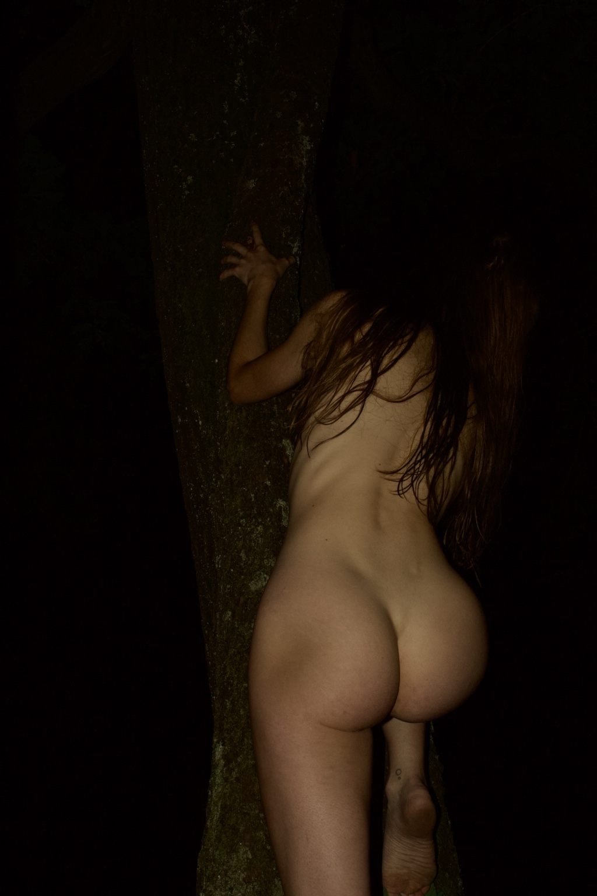

AN INDEPENDENT PHOTOGRAPHIC ARCHIVE BERLIN, GERMANY
Alejandro Molinari.


THE PHOTOGRAPHERVOL. 001
Berlin-based photographer and music producer Alejandro Molinari works with Fujifilm and Canon, documenting night flash, the human figure, forest studies and private interiors. He is the son of Oscar Molinari Herrera (1941–2017), the experimental filmmaker and photographer who visited Salvador Dalí in Cadaqués in 1972 and helped establish the Taller de Cine Independiente in Caracas in 1973.
SELECTED WORKS / ORIGINAL PHOTOGRAPHSVIEW THE SERIES